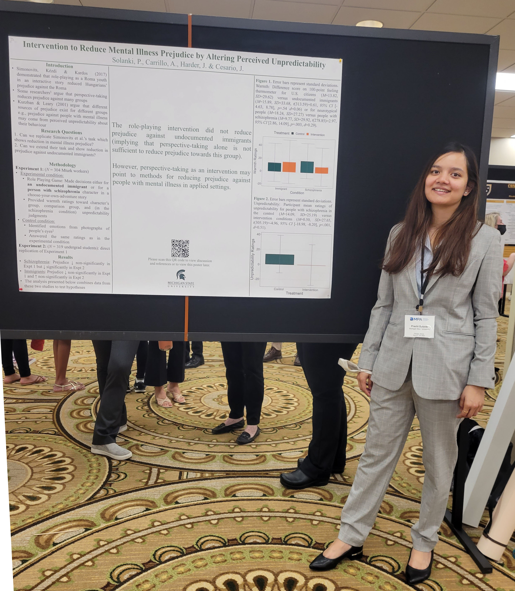
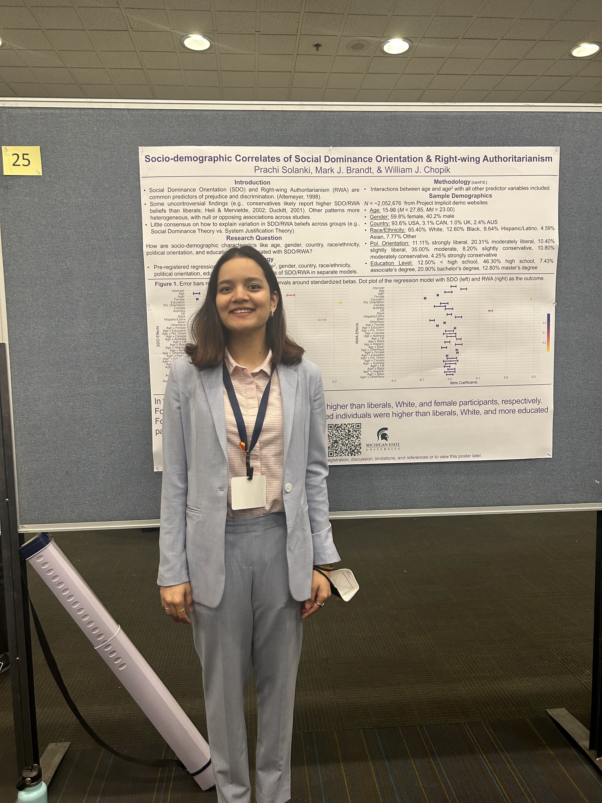

Midwestern Psychological Association, 2022
Intervention to Reduce Mental Illness Prejudice by Altering Perceived Unpredictability
My first conference presentation as a graduate student in USA!
My academic projects primarily focus on judgement and decision-making using empirical data and experimental methods. I am also interested in assessing research integrity and reproducibility. I adopt a social-cognitive lens to explore questions like:

Midwestern Psychological Association, 2022
My first conference presentation as a graduate student in USA!

Society for Personality & Social Psychology, 2023
A large scale project analyzing trends & creating data visualizations using big data (> 2M observations).

Society for Personality & Social Psychology, 2024
Presenting my dissertation findings on how people use different sources of information when forming impressions of others.